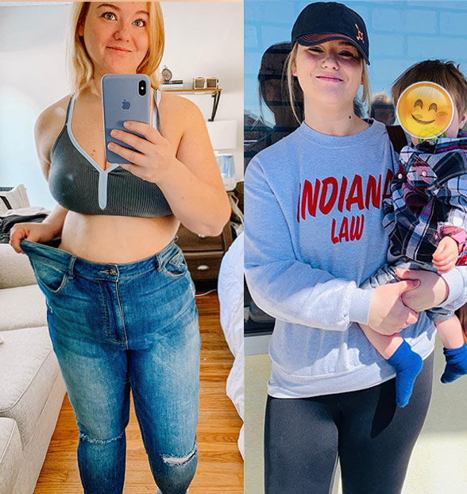
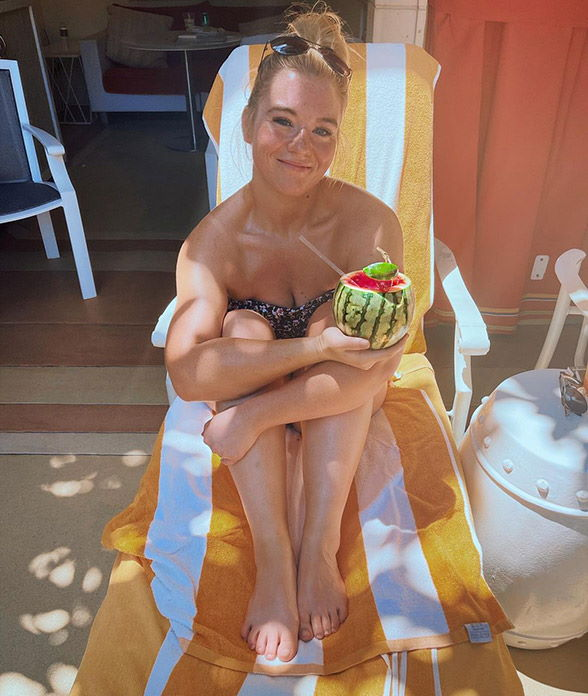
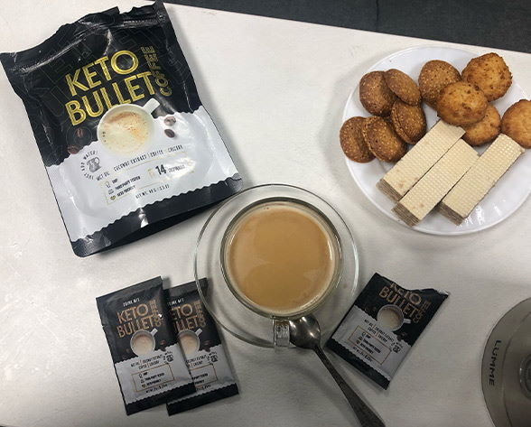
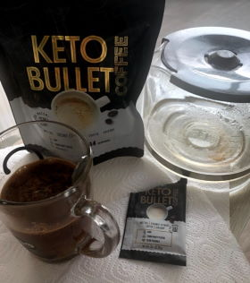
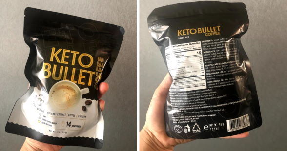
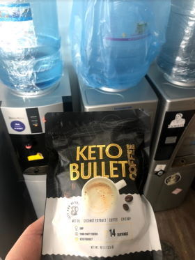

17 Kommentare
Meine Geschichte Wie die Geburt meiner Kinder beim Abnehmen half und ich eine glückliche und selbstsichere Frau wurde


Nach der Geburt meines Kindes im Alter von 24 Jahren erholte sich mein Körper von alleine. Mein Gewicht vor der Schwangerschaft kam von ganz allein wieder zurück. Meine Oberschenkel wurden breiter und runder und ich war in perfekter Form. Das gleiche passierte nach meiner zweiten Schwangerschaft zwei Jahre später. Aber das gleiche Wunder geschah nicht nach meiner dritten Schwangerschaft im Alter von 32 Jahren.
Ich aß unverantwortlich wie immer in der Hoffnung, dass mein Gewicht von selbst weggeht, genau wie bei den anderen beiden Schwangerschaften. Das hat mir nicht gut getan. Mein Jüngster war 6 Monate alt und mein Übergewicht nahm ständig zu (die Leute dachten sogar, ich wäre schon wieder schwanger). Mein Jüngster war immer unruhig, er gab mir kaum eine Pause und musste die ganze Zeit gehalten werden. Ich war immer mit den Kindern und meinem Mann beschäftigt und gestresst. Das hat mich dazu gebracht, wie in einem Teufelskreis immer wieder süße, panierte und salzige Sachen zu essen. Ich war eine fette Sau. Meine kleinsten Bewegungen ließen mich in Schweiß ausbrechen und mein Herz schlug wie verrückt.

Ich wog 105 kg, als ich meinen Ehepartner dabei erwischte, wie er Frauen beim Vorbeigehen beobachtete. Ich konnte es ihm zu diesem Zeitpunkt nicht einmal verdenken. Was konnte ich von dem Mann erwarten, wenn selbst ich es hasste, mich selbst anzusehen? Ich vermied es, mich beim Vorbeigehen am Spiegel anzusehen, ganz zu schweigen davon, wie ich es vermied, mich vor ihm auszuziehen... Ich versteckte mich im Kinderzimmer und schlief mit Süßigkeiten im Bett unseres jüngsten Kindes.

Das einzige, was mich motivierte, einen Experten aufzusuchen, war, dass mein Kind mit 14 Monaten kaum laufen konnte... ein Albtraum einer Mutter. Es war eine Qual, meinem Sohn beim Laufenlernen zu helfen. Mein unterer Rücken klickte und klapperte und es fühlte sich an, als würde Metall darin brennen. Schweiß tropfte über mein Gesicht und auf mein Kind.
Ich konnte so nicht weiterleben, also bat ich meinen Mann, sich eine Auszeit von der Arbeit zu nehmen und auf die Kinder aufzupassen, während ich zu einer Ernährungsberaterin ging. Zu meiner ersten Erfahrung beim Ernährungsberater gibt es nicht viel zu sagen. Sie haben mich auf eine Proteindiät gesetzt, die ich nur 3 Tage durchhalten konnte. Ich war so erschöpft und hungrig, dass ich bei jeder Kleinigkeit die Beherrschung verlor.

Ich ging zu einem anderen Ernährungsberater, der mich eine Keto-Diät ausprobieren ließ. Die Grundidee einer Keto-Diät ist, dass der Körper die ganze Zeit in eine Fettverbrennungsphase übergehen soll, während er nur fettige und proteinhaltige Lebensmittel und kaum Kohlenhydraten zu sich nimmt. Zufälligerweise esse ich genau das sehr gerne, also war es nicht zu schwer. Es lief alles gut bis zum 5. Tag, als etwas, das die Ernährungsberaterin "Keto-Grippe" nannte, mich stoppte. Zu den Symptomen gehörten Müdigkeit, Übelkeit, Gehirnnebel und Kopfschmerzen, die selbst die stärksten Schmerzmittel nicht lindern konnten. Und es war schon schwer genug, sich mit 3 Kindern auszuruhen.
Meine Ernährungsberaterin hat mir das Ergänzungsmittel Keto Bullet empfohlen, um meine Keto-Diät zu beschleunigen und zu vereinfachen. Das ist ein kaffeeähnliches Getränk, in das ich mich direkt verliebt habe. Eine Tasse Keto Bullet gab mir jeden Morgen genauso viel Energie wie normaler Kaffee.
Ich kann nicht behaupten, dass ich sofort 28 kg abgenommen habe, aber nach ein paar Tagen fühlte ich mich viel besser. Sobald ich mit der Einnahme dieses Ergänzungsmittels begann, bemerkte ich eine Veränderung meines Appetits. Die Keksdose blieb zum ersten Mal unberührt. Abends habe ich den Kühlschrank kaum geöffnet und nachts aufgehört zu essen. Ich schlief tiefer und wachte mit mehr Energie auf.
Mein Bauch wurde von Tag zu Tag kleiner. Zu meiner Überraschung musste ich meinen Gürtel immer enger statt lockerer schnallen. 2 Wochen vergingen und ich passte nicht mehr in meine Jeans. Ich habe mich jedes Mal gefreut, wenn ich in den Spiegel geschaut habe und hatte eine tolle Stimmung. Mein Mann flirtete bei jeder Gelegenheit mit mir und ich hielt mich nicht mehr zurück.

Einen Monat später hatte ich 17 kg abgenommen. Ich habe nichts dafür aktiv getan. Wirklich. Ich habe einfach nur Keto Bullet genommen und wie immer gegessen. Manchmal habe ich sogar Gebäck und Junk Food gegessen. Daher ist es schwer zu sagen, dass ich tatsächlich eine Keto-Diät gemacht habe. Aber die Portionsgröße, die ich wollte, ging weit zurück. Ich fühlte mich so leicht und frei und noch besser als nach der Geburt meines ersten Kindes, ohne ständig hungrig sein zu müssen. Die Hausarbeit und die Betreuung der Kinder wurden einfacher. Es war, als hätte ich ein neues Leben begonnen.
Ich fing an, mich mehr zu bewegen und brachte meinem Sohn das Gehen bei. Ich bin froh. Ich bekomme keine seltsamen Blicke mehr von anderen Müttern auf dem Spielplatz.
Der gesamte Abnehmprozess dauerte nur 2 Monate. Die Ernährungsberaterin meinte, dass Keto Bullet so funktioniere. Ohne dieses Ergänzungsmittel hätte ich 4-5 Monate warten müssen, um die gleichen Ergebnisse zu erzielen. Ich bereue es nur, so spät von diesem Getränk erfahren zu haben und dass ich so lange mit meinem Übergewicht kämpfen musste.

Ich wiege jetzt 77 kg, was bei meiner Körpergröße von 175 cm völlig normal ist. Ich betrachte mich im Spiegel und sehe wieder eine attraktive junge Frau. Ich fühle mich gewollt und meine Augen leuchten vor Glück. Meine Ehe ist voller Verständnis, Liebe und Leidenschaft.
Also, wenn auch du übergewichtig bist, gib nicht auf! Egal was! Wenn du es ernst meinst mit dem Abnehmen, dann probiere am besten Keto Bullet . Es hat mir geholfen und kann auch dir helfen.
 Gehe zur Website und gib eine Bestellung auf
Kommentare:
Julia222
Ah, ich dachte du hättest deinen Blog gelöscht. Ich freue mich für dich! Deine Beiträge rühren mich zu Tränen
1111Kathi
Was für ein super Mädel! Du siehst besser aus als je zuvor!
Kirsten1234
Ich nehme jeden Winter mindestens 5 kg zu. Dieses Jahr waren es sogar 10. Ich muss bald abnehmen, sonst verstecke ich mich den ganzen Sommer wieder und gehe nicht an den Strand.
Laura_19
Ich habe von Keto Bullet gehört! Jeder sagt es ist echt super!
99Christina99
Hallo allerseits! Was meint ihr? Ist es nicht besser, einmal eine Fettabsaugung zu machen? Ich habe das letztes Jahr machen lassen und kann mich nicht beschweren. Es war natürlich nicht billig, aber es hat sich gelohnt.
Elisa_166
Es ist kaum zu glauben, dass du ohne ernsthafte Diäten oder intensives Training in einem Monat so viel Gewicht verlieren konntest, aber ich werde es versuchen.
momof4
Das Gewicht zu kontrollieren wird mit zunehmendem Alter schwieriger. Ich hatte kein Glück bei der Einhaltung der Essbeschränkungen. Ich kann Süßigkeiten einfach nie nicht widerstehen! Deshalb habe ich mich entschieden, Keto Bullet zu probieren. Es ist praktisch, es bei der Arbeit und zu Hause zu trinken. Es ist jedes Mal lecker. Ich kann bereits Ergebnisse sehen, mein Gewicht sinkt. 9 kg in anderthalb Monaten. Ich kann es sogar mit diesen Bildern beweisen.
lecker.kuchen
Hallo, ich habe heute mein Paket bekommen und kann schon jetzt bestätigen, dass es sofort den Hunger tötet! Ich wollte gestern und heute nicht mehr als nur Mittag- und Abendessen essen. Ich habe nachts besser geschlafen, was für mich wichtig ist, weil andere Nahrungsergänzungsmittel bei mir Schlaflosigkeit verursachten.
Juliane
Ich bin zu faul zum Trainieren und ich liebe Süßigkeiten viel zu sehr, um eine Diät zu machen. Ich dachte ehrlich gesagt, dass ich ewig brauchen würde, um meinen fetten Bauch loszuwerden. Ich musste sogar anfangen, Kleidung eine oder zwei Nummern größer zu kaufen, aber ich habe es geschafft, es geheim zu halten. Keto Bullet hat mir geholfen, Fett loszuwerden. Und zwar ganze 14 Kilo! Und das alles in nur 2 Monaten! Ich kann es nur weiter empfehlen. Versuch es!
Patricia
Früher habe ich sehr leicht zugenommen. Nur ein paar Bonbons oder ein Keks und meine Hüften wurden am nächsten Tag schlaff. Dann hungerte ich mich eine Woche lang, um wieder in Form zu kommen. Früher war das so, jetzt achte ich kaum noch darauf, was ich esse. Ich trinke lieber Keto Bullet und wiege stets 56 kg, ohne darauf zu achten.
BlumeDerLiebe:99Saskia99
Die Fettabsaugung ist eine komplizierte und gefährliche Operation. Es ist auch unzuverlässig. Eine Freundin von mir hat es vor 3 Jahren machen lassen und musste es immer wieder tun. Je mehr sie abnahm, desto schlaffer hing die Haut.
Larissa
Ich stellte mich auf ihre Seite und las die Zutaten. Zu sehen, dass die Zutaten alle natürlich waren, überzeugte mich, es auszuprobieren. Andernfalls können alle unnatürlichen Nahrungsergänzungsmittel zur Gewichtsabnahme auf dem Markt gefährlich sein. Ich habe einmal eine Gewichtsabnahmepille ausprobiert, die meinen Magen gereizt hat. Ich hoffe Keto Bullet hat keine Nebenwirkungen.
Natascha
Eine Kollegin von mir trinkt dieses Getränk. Sie hat in letzter Zeit wirklich abgenommen. Alle im Büro sind beeindruckt. Jeder hat es getrunken und Gewicht verloren. Ich überlege, es auch zu bestellen.
HannaMond_999
Keto Bullet Es funktioniert wirklich. Ich habe es vor einem halben Jahr erfahren. Ich habe jetzt keine Probleme mit meinem Gewicht. Vorher wog ich satte 79 kg! Ich habe jeden Rat befolgt und bereue es nicht. Wer das Übergewicht satt hat oder einfach nur ein paar Kilo abnehmen möchte, sollte es mal versuchen. Etwas Besseres gibt es nirgendwo. Es gab mir ein gesundes Gefühl und hat im Gegensatz zu anderen Nahrungsergänzungsmitteln nichts mit meinen Hormonen, meinem Magen oder Darm getan. Ich kann mich nicht beschweren.
AndreaGirl
Danke für die Empfehlung. Ich habe schon alles probiert und keinen Erfolg gehabt. Ich hoffe es funktioniert wirklich.
Erika Grieß
Ich finde es nirgendwo in einer Apotheke. Ich denke, in unserer Stadt gibt es das nicht.
Mareike
Natürlich nicht. Es wurde doch erwähnt, dass man es nur über die offizielle Website bestellen kann. Selbst wenn du so etwas in der Apotheke findest, wird es höchstens eine Kopie davon sein. Ich habe meinen Kaffee geholt und vor kurzem angefangen ihn zu trinken. Ich habe in der ersten Woche 3 kg abgenommen und bin überglücklich!